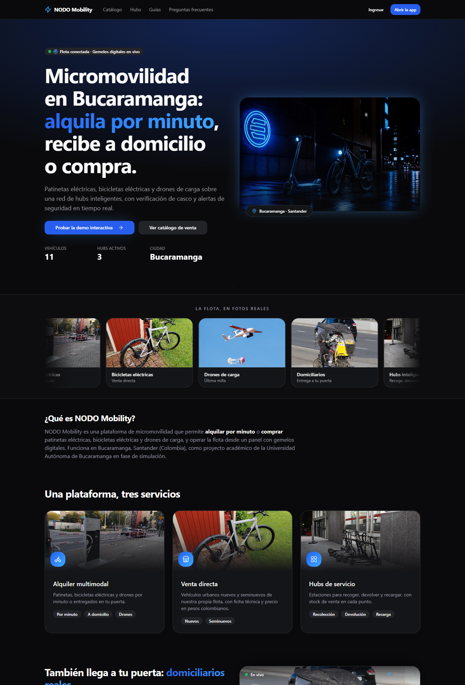
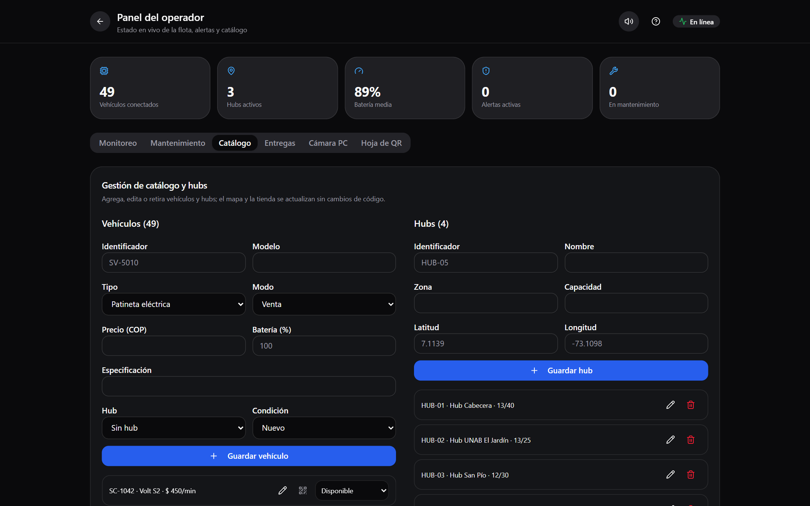
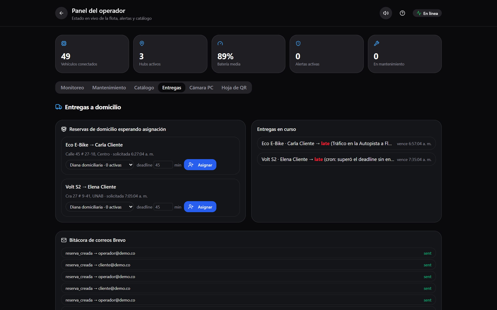

Este documento presenta los principales pantallazos de la página web pública y de la aplicación de Urban Mobility Hub · NODO Mobility, organizados por módulo y por rol de usuario. Cada pantalla indica su ruta, el rol que la usa, el caso de uso que implementa y el componente del código fuente que la construye.
Origen de las capturas
Origen
Descripción
Producción
https://urbanmobility.duckdns.org (VM Azure, HTTPS), capturadas el 13-nov-2026.
Local
Aplicación con backend SQLite en http://localhost:8080, capturadas con Playwright (entregables/_tools/capturar.mjs).
Local · 20-nov
Funciones nuevas capturadas el 20-nov-2026 con datos de demostración (entregables/entrega-final/tools/capturar-nuevas.mjs).
Cuentas de demostración
Rol
Usuario
Contraseña
Qué ver
Cliente
cliente@demo.co
Demo1234!
Mapa, reserva, pago, desbloqueo, historial
Cliente con viajes
viajero@demo.co
Demo1234!
Tres alquileres en curso
Operador
operador@demo.co
Demo1234!
Panel, mantenimiento, catálogo, entregas, cámara, QR
Domiciliario
domi1@demo.co
Demo1234!
Bandeja de entregas
26
pantallas documentadas
29
figuras
3
roles: cliente, operador, domiciliario
Figura 1. Landing — página de inicio (escritorio) (parte 1 de 3)
Propuesta de valor, flota con fotos reales, servicios, entrega a domicilio, tarifas en COP, seguridad IoT, hubs, preguntas frecuentes y cuentas de demostración. Animaciones de aparición al desplazarse; accesibilidad 100 en Lighthouse.

Figura 1. Landing — página de inicio (escritorio) (parte 1 de 3).
Figura 2. Landing — página de inicio (escritorio) (parte 2 de 3)
Formulario de cuenta con aceptación obligatoria del tratamiento de datos (Ley 1581) y consentimiento biométrico opcional. Sin consentimiento el servidor responde 422.
Tarjetas de reserva con estado del prepago («Prepago pagado ($10.000). Ya puedes desbloquearlo»), ubicación del vehículo, Desbloquear, Cómo llegar y Cancelar.
Figura 15. Mis reservas en el mapa y botón Desbloquear.
KPIs de flota (vehículos conectados, hubs activos, batería media, alertas activas, en mantenimiento), simulador de eventos IoT (sin casco, caída, pérdida de GPS, batería crítica) y mapa de flota en vivo.
Figura 19. Panel del operador — Monitoreo.
Figura 20. Panel del operador — vista completa en producción (parte 1 de 2)
Abrir una orden con motivo y notas, órdenes abiertas e historial. Un vehículo en mantenimiento desaparece de la app del cliente y no se puede desbloquear.
Alta y edición de vehículos (tipo, modo, precio, batería, hub, condición) y de hubs (zona, capacidad, coordenadas). Un hub con vehículos no se puede dar de baja (RF-24).

Figura 23. Gestión de catálogo y hubs.
Figura 24. Asignación de entregas y bitácora de correos
Reservas a domicilio esperando asignación (con el domiciliario y el plazo), entregas en curso con su estado tardío y bitácora de correos Brevo (sent / simulated / failed).

Figura 24. Asignación de entregas y bitácora de correos.
Demostración del casco: la webcam del PC envía fotogramas al servidor, que los reenvía al servicio de visión YOLOv8n y publica el veredicto «Con casco / Sin casco» con su confianza.